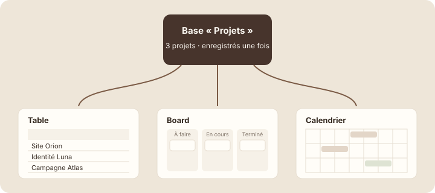

Une base, plusieurs vues
Étape 1 : comprendre
Ta base « Projets » s'affiche en tableau. C'est pratique pour tout voir d'un coup, mais pas toujours : Emma veut voir l'avancement en colonnes, Lucas veut savoir ce qui tombe cette semaine. Faut-il créer une base pour chacun ? Non.
Une vue est une façon d'afficher une base. Une même base peut avoir autant de vues que tu veux : un tableau, des colonnes de suivi, un calendrier… Les projets, eux, ne sont enregistrés qu'une seule fois.
Compare avec des lunettes : tu peux regarder la même pièce avec des lunettes de lecture ou des lunettes de soleil. La pièce ne change pas ; seule ta façon de la voir change. Si tu changes le statut d'un projet dans le tableau, il change aussi dans le calendrier, puisque c'est le même projet.
Les vues apparaissent sous forme d'onglets en haut de la base. Pour en ajouter une, clique sur « + » à droite des onglets (ou « Ajouter une vue », Add view), choisis le type, puis donne-lui un nom.

Une vue est une façon d'afficher une base ; les données, elles, ne sont jamais dupliquées.
Attention : supprimer une vue ne supprime aucun projet : seule la façon de les afficher disparaît. En revanche, supprimer la base supprime tous les projets. Lis bien le menu avant de cliquer.
Trois vues de la base Projets
Voici la base « Projets » avec trois vues. Passe d'un onglet à l'autre : ce sont toujours les trois mêmes projets. Ouvre « Site Orion » dans une vue, puis dans une autre : c'est la même page.
Chaque membre de l'équipe peut utiliser la vue qui lui convient, sans déranger les autres : Emma reste sur le board, Lucas sur le calendrier. Les informations restent les mêmes pour tout le monde.
Ajouter une vue « Suivi »
- Ouvre ta base « Projets ». En haut, un onglet porte le nom de la vue actuelle, souvent « Tableau » (Table).
- Double-clique sur cet onglet (ou clic droit, puis « Renommer ») et nomme-le « Tous les projets ».
- Clique sur le + à droite de l'onglet. La liste des types de vues apparaît.
Capture d'écran Notion Ajouter une vue · images/captures/m05-ajouter-vue.png
- Choisis Board. Notion range les projets en colonnes selon leur statut.
- Renomme la nouvelle vue « Suivi ». Tu as maintenant deux onglets.
- Dans « Suivi », passe « Identité Luna » en « En cours ». Reviens sur « Tous les projets » : le statut a changé là aussi.
Astuce : donne à chaque vue un nom qui dit à quoi elle sert (« Suivi », « Cette semaine », « Mes projets ») plutôt que son type (« Board 2 »).
Exercice · dans Notion
Deux vues pour la base Projets
- Renomme la vue de départ « Tous les projets ».
- Ajoute une vue Board nommée « Suivi ».
- Modifie un statut dans « Suivi » et vérifie le changement dans « Tous les projets ».
Résultat attendu : deux onglets en haut de la base. Le changement de statut apparaît dans les deux vues, parce qu'il n'y a qu'un seul projet. Aucun projet n'a été dupliqué.
Étape 4 : vérifier
À retenir
Objectif de la leçon : tu sais maintenant ce qu'est une vue et en ajouter une à ta base, sans jamais dupliquer tes données.
- Une vue est une façon d'afficher une base ; les données ne sont jamais dupliquées.
- Une modification faite dans une vue apparaît dans toutes les autres.
- Supprimer une vue ne supprime aucune entrée ; supprimer la base, si.
Choisis une réponse avant de valider.
Les vues affichent les mêmes entrées. Une modification faite dans l'une se retrouve partout.
Choisis une réponse avant de valider.
Une vue n'est qu'une manière d'afficher la base. La supprimer ne touche à aucun projet.